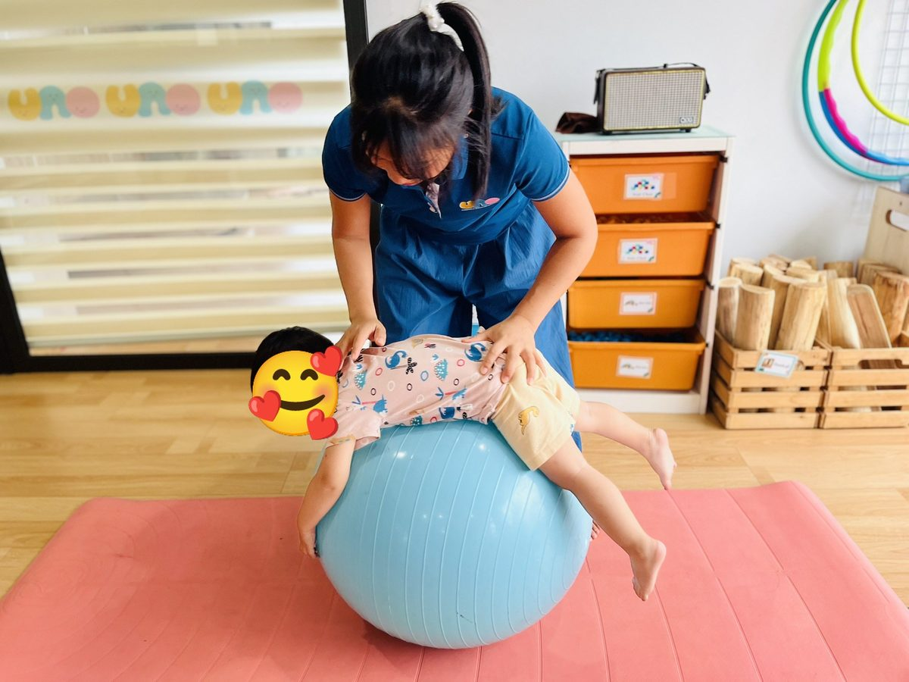

Chánh niệm cho bé
Yoga cho bé khó tập trung, hay lơ đãng, bồn chồn

Lớp nào cũng có một bạn như thế. Cô vừa nói “cả lớp ngồi xuống nào”, bạn ấy đã nằm lăn ra. Cô kể chuyện, bạn ấy ngắm con kiến bò trên thảm. Cô hỏi, bạn ấy hỏi lại một chuyện khác hẳn.
Bố mẹ ở nhà cũng hay kể với cô. Con làm bài được hai câu là đứng dậy. Ăn cơm thì quay ngang quay dọc. Gọi ba lần mới nghe.
Sophia hiểu cái mệt ấy. Nhưng cô cũng thấy một điều. Phần lớn các con không “hư”. Cơ thể các con đang cần một thứ mà người lớn chưa đưa cho.
Vì sao con khó ngồi yên?
Sự tập trung của trẻ nhỏ ngắn hơn người lớn nghĩ nhiều. Một bạn bốn tuổi chú ý vào một việc được vài phút đã là tốt. Đó là chuyện của tuổi, không phải lỗi của con.
Rồi còn cơ thể. Trẻ con học bằng vận động. Chân muốn chạy, tay muốn chạm, người muốn xoay. Khi năng lượng ấy chưa được xả ra, bắt con ngồi yên giống như đậy nắp một nồi nước đang sôi.
Có cả những điều nhỏ hằng ngày nữa. Ngủ thiếu. Đói. Xem màn hình nhiều, hình ảnh chạy nhanh quá nên một trang sách thấy chậm và chán. Một ngày quá nhiều việc. Hay chỉ là con đang lo, đang buồn mà chưa biết nói.
Cô không phải bác sĩ, nên cô không gọi tên bệnh nào cả. Yoga ở đây là một cách chăm con nhẹ nhàng, đi cùng giấc ngủ đủ, bữa ăn đều và thời gian chơi ngoài trời.
Điều cô học được: động trước, tĩnh sau
Hồi mới dạy, cô cũng muốn các con ngồi thiền ngay đầu buổi. Không được. Các con ngọ nguậy, cười khúc khích, bạn này chọc bạn kia.
Dần dần cô đổi thứ tự. Cho chạy nhảy trước. Rồi thăng bằng. Rồi thở. Cuối cùng mới nằm yên. Giống như thả một quả bóng nảy, để nó nảy thấp dần, thấp dần, rồi tự nằm im.
Một buổi học của cô vì thế đi theo một đường cong: từ ồn đến yên. Bảy hoạt động dưới đây là những gì cô hay dùng, theo đúng thứ tự ấy.
7 hoạt động giúp con quay về
Ảnh thật từ các lớp của cô, khuôn mặt các bé được che để bảo vệ các con.
1. 💃 Nhảy rồi “đóng băng”
Bật một đoạn nhạc vui. Các con nhún, lắc, chạy tại chỗ. Nhạc tắt là đứng im thành một tư thế: cái cây, ngôi sao, con mèo. Nhạc bật lại thì nhảy tiếp. Ba, bốn lượt là đủ.
Điều cô để ý: Trò này nghe thì ồn, nhưng thật ra con đang tập dừng lại đúng lúc. Nghe, chờ, kìm cái chân đang muốn chạy. Cô kể kỹ hơn ở bài Yoga dance.
2. 🦒 Đứng một chân, mắt nhìn một điểm

Tư thế cái cây hay hươu cao cổ: đứng trên một chân, bàn chân kia đặt vào bắp chân hoặc đùi trong, không đặt lên gối. Hai tay chắp trước ngực hoặc đưa cao. Cô dặn con chọn một điểm nhỏ phía trước, một bông hoa, một chấm trên tường, và nhìn nó thôi.
Điều cô để ý: Mắt yên thì người yên hơn. Con lắc lư, chạm chân xuống, lại nhấc lên. Không sao. Mỗi lần con tự đứng lại được là một lần con kéo sự chú ý về. Trong yoga, điểm nhìn ấy có tên là drishti.
3. 🎈 Hơi thở bóng thở

Quả bóng thở là quả cầu nhựa co giãn. Hít vào bằng mũi, hai tay kéo bóng nở to. Thở ra bằng miệng, chậm thôi, bóng khép nhỏ lại. Làm 5 lần. Không có bóng thì dùng hai bàn tay: hít vào mở tay, thở ra chụm tay.
Điều cô để ý: Trẻ con khó “thở chậm” khi chỉ nghe lời. Nhìn thấy quả bóng nở ra, khép lại thì con hiểu ngay. Cô có bài riêng: Hơi thở bong bóng.
4. 🐝 Thở con ong
Ngồi thẳng, mắt nhắm hoặc nhìn xuống. Hít vào bằng mũi. Thở ra, miệng ngậm, phát ra tiếng “ừmmm” như con ong bay. Bạn nào thích thì lấy hai ngón tay khẽ bịt tai, nghe tiếng ong vang trong đầu. 3 đến 5 lần.
Điều cô để ý: Đây là lúc lớp yên nhất. Các con mải nghe tiếng ong của mình nên quên cả ngọ nguậy. Hơi thở ra cũng tự dài hơn. Người lớn muốn tập kỹ thì xem Thở con ong Bhramari.
5. 🎶 Trò chơi lắng nghe
Cả lớp che mắt. Cô gõ một tiếng chuông, hoặc chơi một nhạc cụ nhỏ. Con giơ tay khi không còn nghe thấy tiếng chuông nữa. Lớn hơn một chút thì chơi đoán nhạc cụ, như bài Cảm thụ âm nhạc.
Điều cô để ý: Tiếng chuông tan rất chậm. Để biết lúc nào nó hết, con phải nghe thật kỹ. Cô thấy có bạn nghiêng cả đầu, nín cả thở. Đó chính là tập trung, mà con không hề thấy mình đang “học”.
6. 🔵 Cảm nhận cơ thể với quả bóng lớn

Với các bạn nhỏ, có bạn bồn chồn vì cơ thể cần được chạm, được đè nhẹ, được đung đưa. Cô cho con nằm sấp trên quả bóng lớn, tay chạm đất, cô giữ hông và lăn thật chậm. Hoặc đơn giản là ôm con, xoa lưng, ấn nhẹ hai vai.
Điều cô để ý: Sau vài vòng lăn chậm, nhiều bạn mềm hẳn ra. Thở dài một hơi. Cô kể cách làm ở bài Quả bóng xanh trong lớp Yoga.
7. 🌙 Nằm yên và thư giãn

Nằm ngửa, tay xuôi theo người, mắt nhắm. Cô nói rất nhỏ, gọi tên từng phần cơ thể: bàn chân nặng xuống, đôi chân nặng xuống, bụng phồng lên xẹp xuống… Hai đến năm phút là đủ. Có hôm cô đi đến từng bạn xoa nhẹ đầu và trán.
Điều cô để ý: Lúc đầu có bạn mở mắt, có bạn cựa quậy. Cô không nhắc. Chỉ nằm cạnh, thở chậm. Vài buổi sau con tự nằm yên được lâu hơn. Xem thêm Massage cuối buổi.
Ở nhà: 10 phút trước giờ học bài hoặc trước khi ngủ
Bố mẹ không cần làm đủ bảy việc. Chọn ba, bốn cái con thích là được. Cô hay gợi ý thế này:
- 2 phút nhảy rồi đóng băng với một bài hát con thích.
- 1 phút đứng cái cây, mỗi bên chân một lần. Bố mẹ đứng cùng con, ai đứng lâu hơn không quan trọng.
- 5 hơi thở bóng thở, hoặc mở và chụm bàn tay.
- 3 hơi thở con ong.
- 2 đến 3 phút nằm cạnh nhau, bố mẹ đặt tay lên bụng con, cùng nghe bụng phồng lên xẹp xuống.
Làm vào cùng một giờ mỗi ngày. Trẻ con thích những gì lặp lại. Lâu dần, cơ thể con tự biết: thở xong bài này là đến giờ ngồi vào bàn, hoặc đến giờ ngủ.
Có hôm con không chịu. Không sao. Bố mẹ cứ tự thở con ong một mình. Thường thì chỉ một lát sau là có một “con ong nhỏ” bay tới ngồi cạnh.
Ở lớp mầm non: những khoảng nghỉ một phút
Với thầy cô mầm non, không cần cả một tiết yoga mới dùng được. Cô Sophia hay gợi ý những khoảng rất ngắn, chen vào giữa các hoạt động:
- Trước giờ kể chuyện: cả lớp làm 3 hơi bóng thở bằng tay. Rồi mới mở sách.
- Khi lớp ồn quá: cô không nói to hơn. Cô gõ chuông, giơ tay. Bạn nào nghe thấy thì giơ tay theo, đến khi tiếng chuông tan.
- Sau giờ chơi ngoài trời: một phút đứng cái cây trước khi vào lớp.
- Trước giờ ngủ trưa: nằm xuống, cô gọi tên từng phần cơ thể thật chậm.
Mỗi lần chỉ một phút. Nhưng lặp lại mỗi ngày thì cả lớp có một “nút dừng” chung. Cô giáo cũng đỡ mệt hơn nhiều.
Khoa học nói gì?
Năm 2015, nhóm của Rebecca Razza ở Đại học Syracuse (Mỹ) cho một lớp mẫu giáo tập yoga chánh niệm trong suốt năm học, đăng trên tạp chí Journal of Child and Family Studies. So với lớp không tập, các bé có khả năng chú ý và biết chờ đợi tiến bộ rõ hơn, nhất là những bạn lúc đầu khó tự điều chỉnh nhất.
Cũng năm ấy, Lisa Flook và cộng sự ở Đại học Wisconsin–Madison đưa chương trình “Kindness Curriculum” 12 tuần, gồm thở, lắng nghe, nhận biết cảm xúc, vào các lớp mầm non. Kết quả đăng trên Developmental Psychology: các bé biết chia sẻ hơn, và khả năng tự điều chỉnh, linh hoạt chú ý cũng tốt lên.
Trong cuốn The Whole-Brain Child (2011), bác sĩ tâm thần Daniel J. Siegel và Tina Payne Bryson có một câu cô rất thích: “Name it to tame it”, gọi tên được cảm xúc thì dịu được nó. Cô hay hỏi các con sau khi thở: “Bây giờ trong người con thấy thế nào?” Con trả lời được là con đã dừng lại, đã nhìn vào bên trong.
Vài điều cô hay để ý
- Ngắn thôi. Mỗi hoạt động một, hai phút. Con còn muốn chơi tiếp là vừa.
- Không dùng yoga để phạt. “Ngồi thở đi cho ngoan” làm con ghét hơi thở. Cô mời, không bắt.
- Thở chậm, không nín thở. Với trẻ nhỏ cô không cho giữ hơi. Hít vào, thở ra, nhẹ nhàng.
- Người lớn làm cùng. Trẻ con học bằng cách nhìn. Bố mẹ, thầy cô thở chậm thì con thở chậm theo.
- Lo lắng kéo dài thì hỏi bác sĩ. Nếu con khó tập trung đến mức ảnh hưởng nhiều tới việc học, việc chơi với bạn, hoặc thầy cô cũng thấy như vậy, bố mẹ nên đưa con đi khám nhi hoặc gặp chuyên gia tâm lý trẻ em. Yoga đi cùng, không thay thế.
🌟 Điều các con mang về
Dharana là tập trung, một trong tám chi của yoga. Với trẻ con, nó không phải là ngồi im thật lâu. Nó là biết quay về khi tâm trí đã chạy đi chỗ khác.
Pratyahara là thu các giác quan vào trong. Lúc con nhắm mắt nghe tiếng chuông tan, con đang tập điều đó.
Không có phép màu nào làm một bạn năm tuổi ngồi yên cả buổi. Nhưng có những hơi thở nhỏ, mỗi ngày một ít. Và một người lớn kiên nhẫn ngồi cạnh. Thế là đủ để con biết đường quay về.
🌿 Thầy cô muốn dẫn một lớp từ ồn đến yên?
Sắp xếp thứ tự hoạt động, chọn trò chơi theo tuổi, giữ giọng nói và nhịp thở của chính mình… cô hướng dẫn kỹ trong khóa Đào tạo Huấn luyện viên Yoga trẻ em. Bố mẹ muốn con được học ở lớp cô thì nhắn cô hỏi lịch nhé.